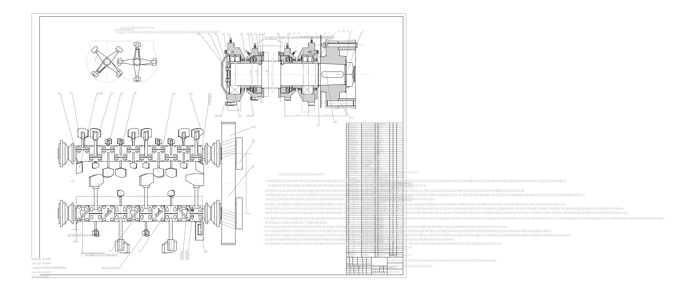
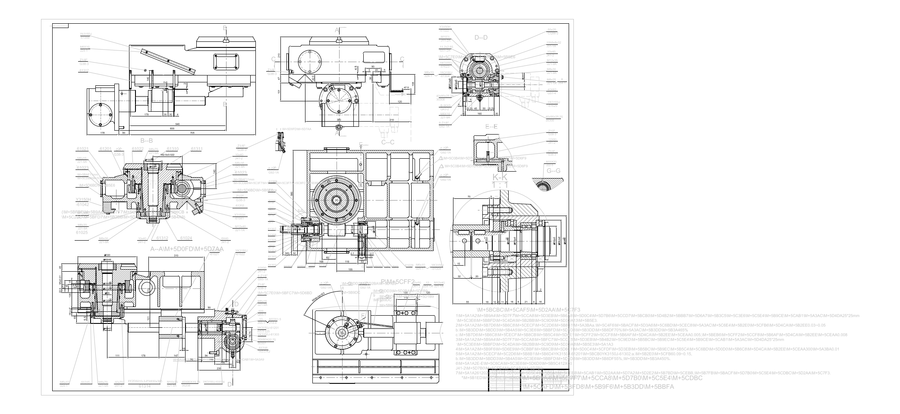
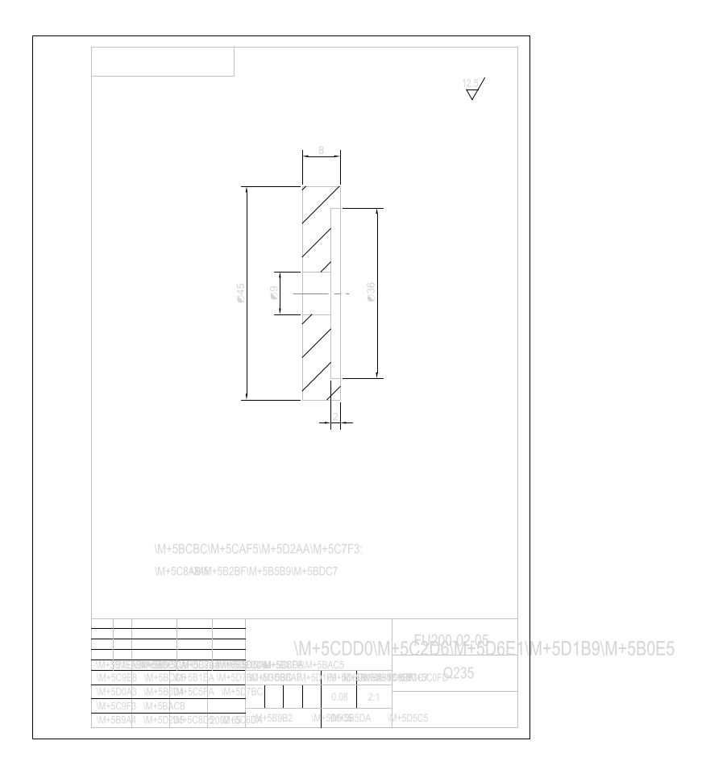
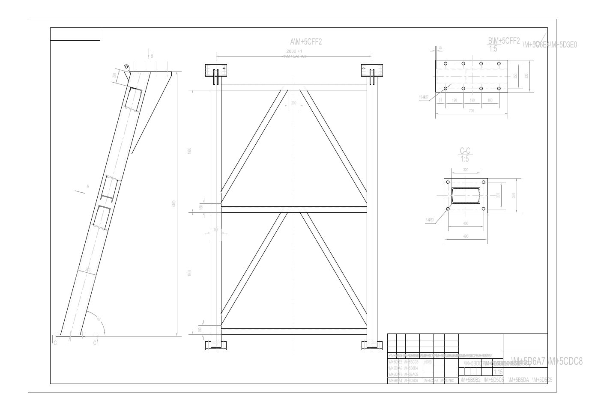
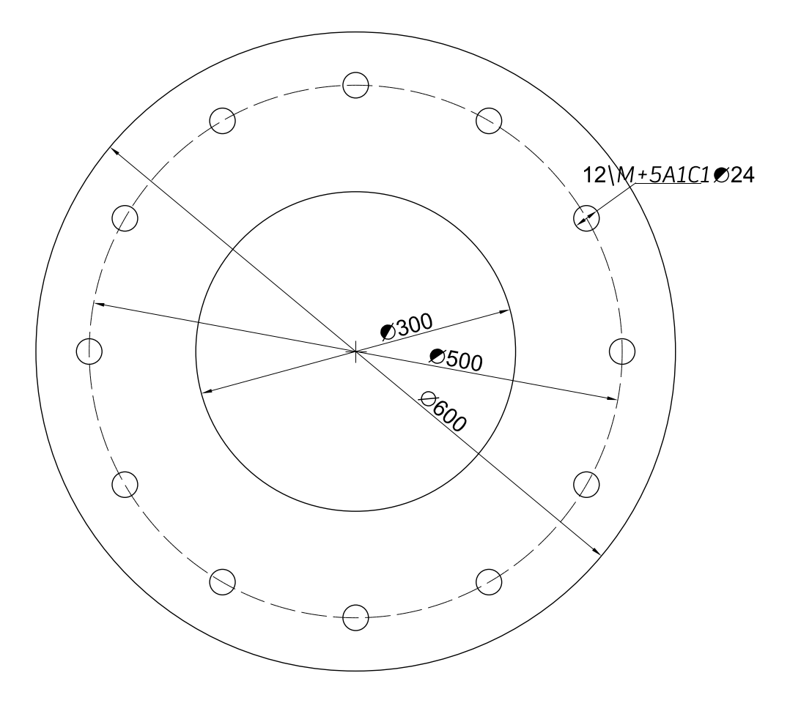
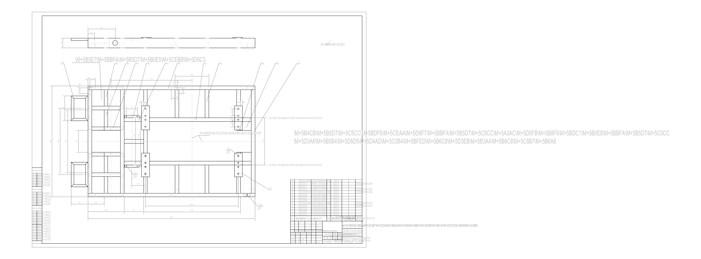
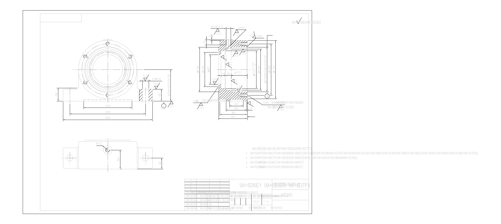
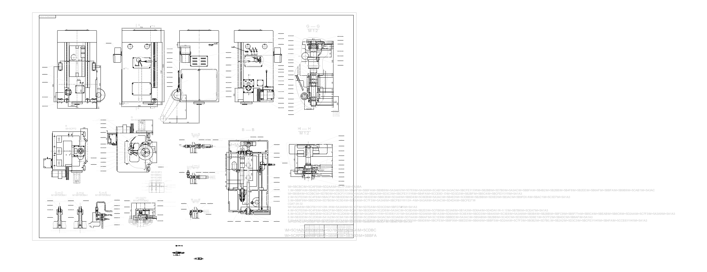
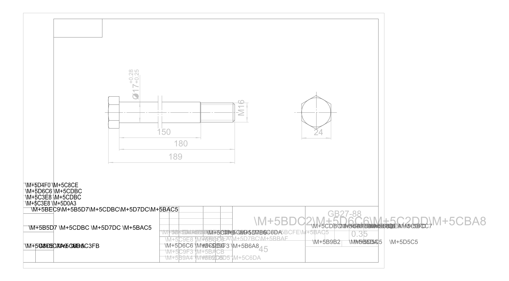

DXF Priority Review Pack
| # |
File |
Suggested Label |
Graph2D Label |
Confidence |
Preview |
| 1 |
31001-2.dxf |
蜗杆 |
机械制图 |
0.3147 |
 |
| 2 |
FU200-02-01-1.dxf |
盖 |
机械制图 |
0.2557 |
 |
| 3 |
JDD00000.dxf |
挡板 |
机械制图 |
0.4252 |
 |
| 4 |
JDB00000.dxf |
旋转组件 |
机械制图 |
0.4586 |
 |
| 5 |
61001.dxf |
旋转组件 |
机械制图 |
0.3982 |
 |
| 6 |
FU200-02-05.dxf |
托轮轴压板 |
机械制图 |
0.2981 |
 |
| 7 |
JDF00000.dxf |
盖 |
机械制图 |
0.2687 |
 |
| 8 |
FU200-02-06.dxf |
轴承 |
机械制图 |
0.2680 |
 |
| 9 |
ZHITUI.dxf |
支腿 |
机械制图 |
0.6094 |
 |
| 10 |
5.dxf |
拨叉 |
机械制图 |
0.2060 |
 |
| 11 |
JDE00000.dxf |
底板 |
机械制图 |
0.5970 |
 |
| 12 |
FU200-02-13-01.dxf |
角钢 |
机械制图 |
0.2544 |
 |
| 13 |
JDA00000.dxf |
支腿 |
机械制图 |
0.5324 |
 |
| 14 |
FU200-02-01-2.dxf |
轴承 |
机械制图 |
0.2483 |
 |
| 15 |
31001-1.dxf |
差动机构 |
机械制图 |
0.5080 |
 |
| 16 |
GB27-88.dxf |
|
机械制图 |
0.2402 |
 |